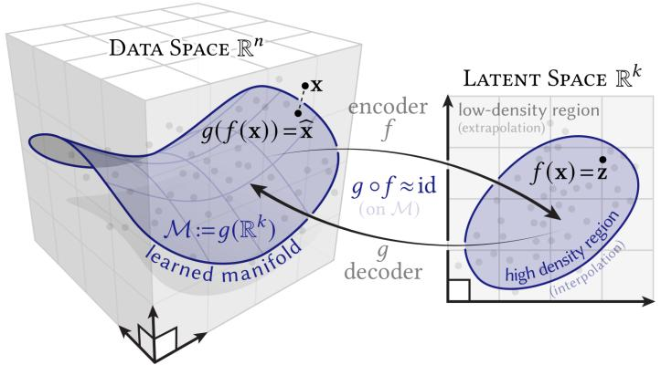

Operator Learning and Control for Unknown Dynamical Systems
We proposed a Koopman generator learning approach, the resolvent-type method (IEEE TAC, 2026), which alleviates the need for high sampling frequencies and reduces bias in the choice of dictionary test functions compared to SINDy/Weak SINDy, Koopman-logarithm methods, and finite-difference approaches. The method has been successfully applied to a range of tasks, including system identification, optimal control, and learning Lyapunov certificates for unknown systems.

To further improve the approach or develop new Koopman-based methods, several key challenges remain:
How can data efficiency in both temporal sampling and state-space coverage be characterized for Koopman generator learning? One possible direction is to draw inspiration from classical PDE solvers (e.g., finite element and spectral Galerkin methods), but in a reverse manner, using these techniques to inform the data efficiency analysis.
How can symbolic regression improve scalability and learning accuracy, and assist in the selection of basis functions? Can it also be used to uncover underlying structures in physical systems? Of particular interest is its potential to learn and discover geometric properties of chaotic systems.
How can dimensionality reduction be performed using manifold learning techniques, and what are the sufficient and necessary conditions for its effectiveness?
System identification for hybrid systems, particularly switching systems: how can convergence be improved toward more general (weak) notions that accommodate discontinuities and nonsmooth dynamics?
For control-affine systems, existing Koopman approaches prioritize the expressive richness of the observable space in terms of linear span, but do not ensure closure under the infinitesimal generator. This is particularly problematic, as the dynamics inherently generate new directions through Lie brackets. How can we ensure exact identifiability and robust approximation by systematically incorporating Lie bracket expansions into the choice of observables, so that the resulting function space is closed, or approximately closed, under the Koopman generator while remaining computationally tractable?
Other related questions not explicitly highlighted here are also open for further discussion.
Resolvent-Type Data-Driven Learning of Generators for Unknown Continuous-Time Dynamical Systems.
Y. Meng\(^\star\), R. Zhou\(^\star\), M. Ornik, J. Liu.
IEEE Transactions on Automatic Control, 2026. (DOI)Learning Regions of Attraction in Unknown Dynamical Systems via Zubov- Koopman Lifting: Regularities and Convergence.
Y. Meng, R. Zhou, J. Liu.
IEEE Transactions on Automatic Control, 2025. (DOI)Learning Koopman-based Stability Certificates for Unknown Nonlinear Systems.
R. Zhou, Y. Meng, Z. Zeng, J. Liu.
IEEE Conference on Decision and Control (CDC). @ Rio de Janeiro, Brazil, 2025. (DOI)Data-driven Optimal Control of Unknown Nonlinear Dynamical Systems Based on the Koopman Operator.
Z. Zeng, R. Zhou, Y. Meng, J. Liu.
Annual Learning for Dynamics & Control Conference (L4DC). @ Ann Arbor, MI, USA, 2025. (DOI)Koopman-Based Data-Driven Techniques for Adaptive Cruise Control System Identification.
Y. Meng, H. Li, M. Ornik, X (Shaw). Li.
IEEE International Conference on Intelligent Transportation Systems (ITSC). @ Edmonton, AB, Canada, 2024. (DOI)